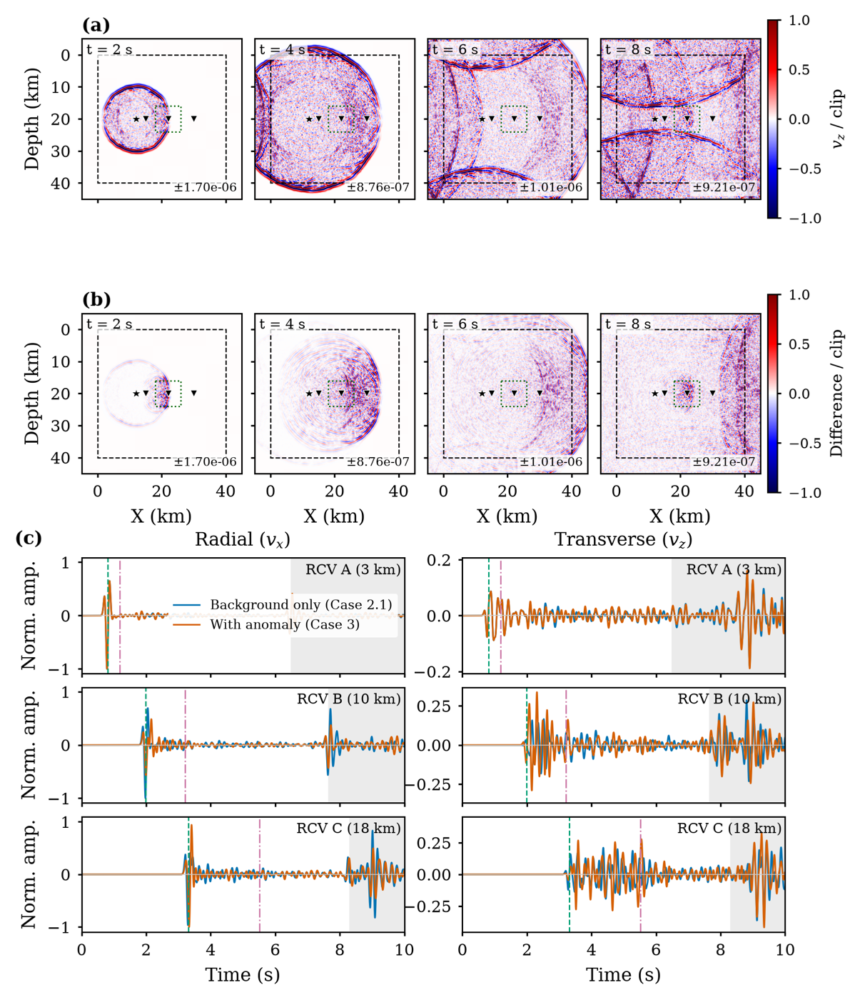
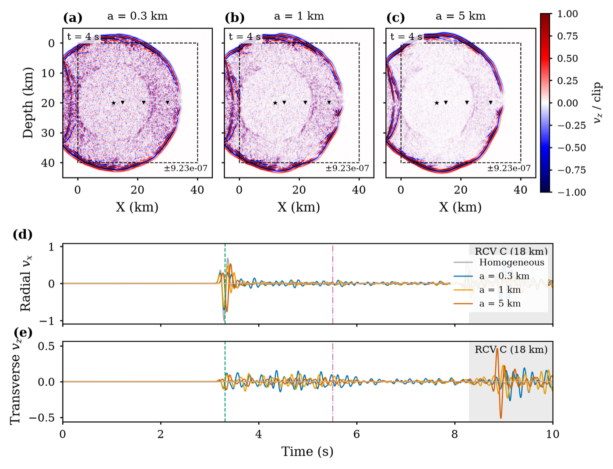
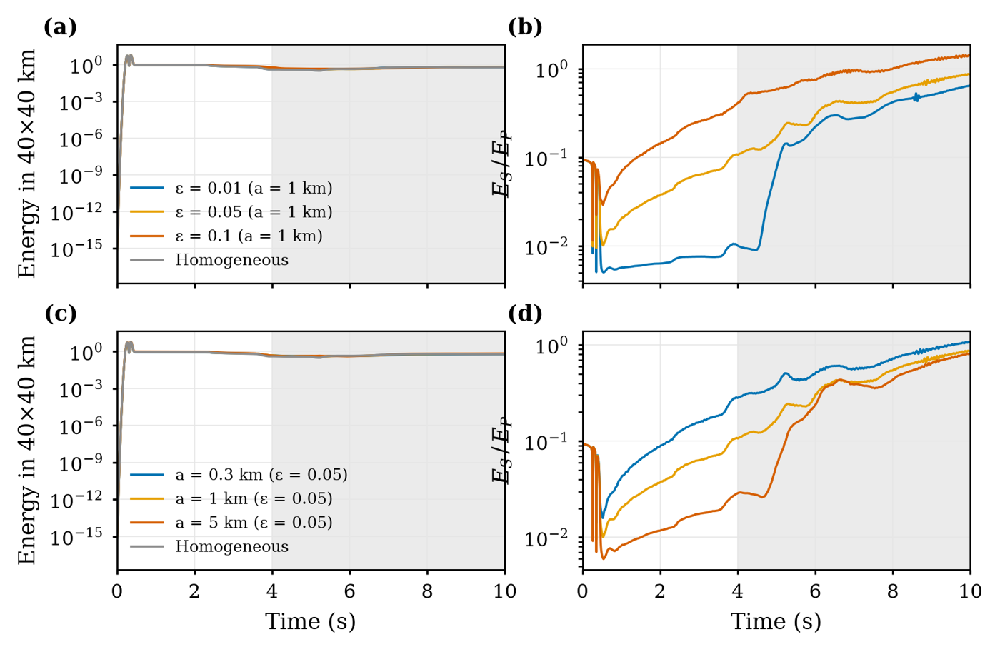

About
I study how seismic waves scatter in the heterogeneous crust, and how a hidden anomaly can be told apart from the random clutter around it. I build numerical experiments from first principles (finite-difference wave solvers, stochastic media and radiative-transfer models) and turn them into quantitative, testable observations.
My route into geophysics began in electrical engineering: a B.Eng. in Electrical Engineering & Automation, then a year maintaining the mission-critical power infrastructure of a national government data center. That background in signals, hardware and fault diagnosis shapes how I approach wave physics, and I am interested in research that connects physical modelling with sensing and signal analysis.
Research
Seismic scattering by localized anomalies in random media
M.S. research, College of Geophysics, CDUT · 2023 – present · first-author manuscript in preparation · code on GitHub
Can a localized zone of strong heterogeneity be detected inside an already-scattering crust? I built a complete simulation framework from scratch to answer this with a three-level control design: homogeneous medium → matched stochastic background → background plus anomaly. Differencing the last two isolates exactly what the anomaly adds.
The framework combines a 4th-order velocity–stress staggered-grid solver with a convolutional PML, FFT-based von Kármán and Gaussian random media, divergence–curl P/S energy separation, and an independent Monte Carlo radiative-transfer model. Sweeping the correlation length across ka ≈ 1.5–25 maps the transition from wide-angle scattering (strong coda, strong P→S conversion) to forward scattering (travel-time delays).



Grid-side control of a distributed hybrid energy storage system
B.Eng. thesis, Southwest Petroleum University · 2021 – 2022 · published
Modelled and simulated grid-side converter control for a distributed hybrid energy storage system in MATLAB, and evaluated how it supports power quality and grid stability.
Publications & Software
Education
- M.S., Geophysics, Chengdu University of Technology2023 – presentThesis: Comparison of Full-Wave Seismic Scattering and Radiative Transfer Simulations in Random Media · Sichuan Provincial Government Scholarship
- B.Eng., Electrical Engineering & Automation, Southwest Petroleum University2018 – 2022Ranked 5th among international students in the major · published thesis
- Diploma in Engineering, Electrical Technology, Rajshahi Polytechnic Institute2014 – 2018Bangladesh Technical Education Board
Experience
- Service Engineer, ARK Power Ltd. (ISO 9001:2015)2022 – 2023Operated and maintained the power infrastructure of a national government data center in Dhaka: UPS, diesel generators, automatic transfer switches, LV distribution, protection and SCADA monitoring. Fault diagnosis and load management on live systems.
- Volunteer, Life Affairs Dept., International Student Association, CDUT2024 – 2025Supported international students with course selection, leave approvals and university notices. Named Outstanding ISA Staff Member (2025).
- Campus Ambassador, Bangladesh–China Youth Student Association2023 – 2024Guided applicants to CDUT and organized cultural-exchange events.
Honors
- Sichuan Provincial Government Scholarship, graduate excellence2023 – 2026
- Outstanding ISA Staff Member, College of International Education, CDUT2025
- Ranked 5th among international students, Electrical Engineering & Automation, SWPU2022
Skills
- Programming
- Python (NumPy, SciPy, Matplotlib), C, MATLAB, LaTeX, Git, GitHub Actions
- Numerical modelling
- Finite-difference PDE solvers, C-PML, stochastic random fields, Monte Carlo transport, SPECFEM, PowerWorld
- Signal analysis
- Modern signal processing, cross-correlation and travel-time estimation, energy/coda analysis, wavefield decomposition
- Electrical & hardware
- Power electronics, UPS and backup power, protection and grounding, SCADA, microcontrollers, Multisim, Proteus, AutoCAD
- Languages
- Bengali (native) · English (fluent) · Chinese (conversational, HSK)